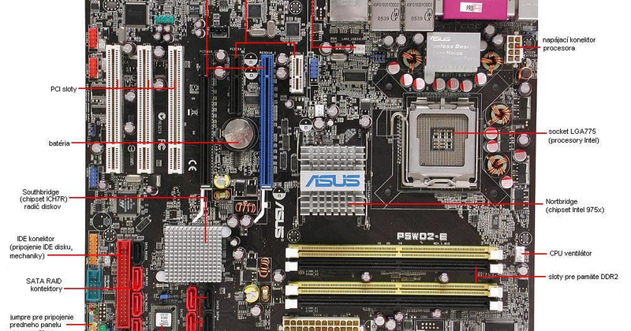

Základná doska (motherboard) je základ väčšiny počítačov. Jej hlavným účelom je spojiť jednotlivé kusy hardwaru do 1 celku a poskytnúť im prísun napätia. Postupom času sa do základnej dosky začali integrovať niektoré kusy hardvéru, ktoré boli predtým zvlášť (zvuková karta, sieťová karta, ...). Typický motherboard umožňuje pripojenie procesora a pamäte RAM. Ďalšie komponenty sa pripájajú pomocou zberníc a konektorov. Taktiež na nej nájdeme pamäť ROM, na ktorej je uložený BIOS. Najdôležitejšie integrované obvody sú zakomponované v čipovej sade (chipset).
Jedná sa buď o jeden čip, alebo dva (northbridge a southbridge). Typ čipovej sady určuje aký procesor a pamäť bude možné pripojiť k PC. Čipová sada: sa obvykle skladá z 2 čipov, ale občas sú oba čipy zakomponované do 1. Čipset zisťuje komunikáciu medzi procesorom, zbernicami, sloty, radičmi a ďalšími komponentmi na základnej doske.
Northbridge ("Severný mostík„) zabezpečuje komunikáciu medzi CPU, RAM, PCI-Express a má na starosti spojenie s "južným mostíkom". Tiež sa do neho, keď je potreba, integruje grafická karta. Jeho význam spočíva, v tom že určuje rýchlosť a typ CPU, veľkosť a druh RAM. Má tiež veľkú úlohu pri taktovania, pretože jeho frekvencia je základná pre CPU. Z dôvodu vysokej integrácie zvyčajne potrebuje vlastné aktívne chladenie.
Southbridge ("Južný mostík„) má na starosť obsluhu pomalších komponentov ako napr: klávesnica, pevné disky, myši... Jeho komunikácia s Northbridge prebieha po rozhraní špeciálne k tomu určenému. Podporuje štandardy typu LPC, DMA, SATA a rodinu PCI. Voliteľne tiež môže podporovať USB, RAID, Ethernet alebo FireWire